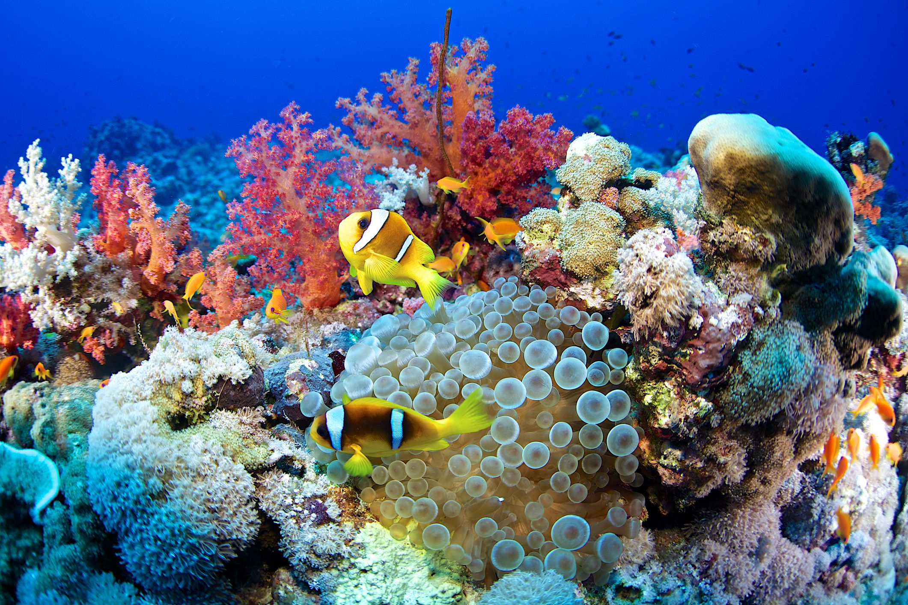
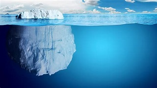

A World Beneath the Waves: Exploring Different Habitats

Coral Reefs
Vibrant ecosystems teeming with fish, coral, and countless other species.

Ocean Depths
Mysterious and unexplored, home to bizarre organisms adapted to darkness and pressure.

Freshwater Lakes & Rivers
Home to diverse fish, amphibians, and plants, vital for local communities.